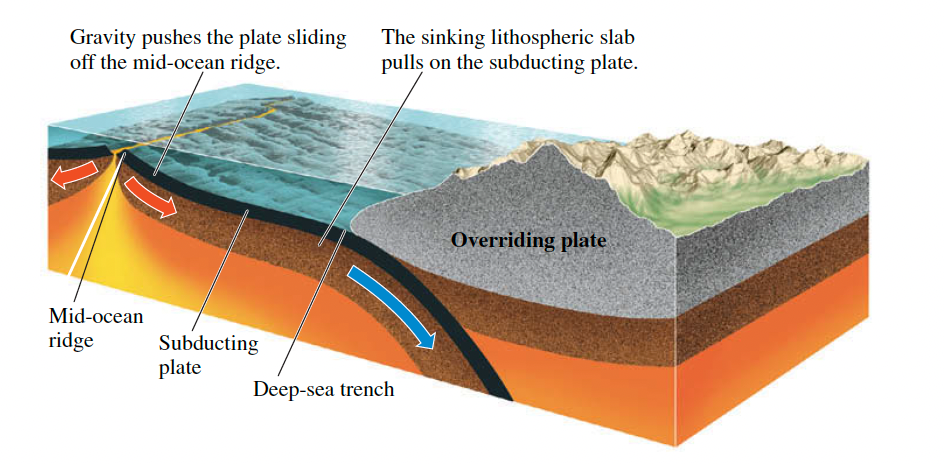

Ridge Push and Slab Pull
Contents
(Ridge Push and Slab Pull)=
Ridge Push and Slab Pull#
import numpy as np
import matplotlib.pyplot as plt
Plate Recycling#
For plate tectonics to work, the lithospheric material that descends into the mantle at subduction zones must be recycled through the mantle and eventually return to the crust as new lithosphere created at spreading centers. How deep into the mantle does this recycling process extend? That is, where is the lower boundary of the mantle convection system?
The lower boundary could be as deep as 2890 km below Earth’s surface, where a sharp compositional boundary separates the mantle from the core. The iron-rich liquid below this coremantle boundary is much denser than the solid rock of the mantle, preventing any significant exchange of material between the two layers. We can thus imagine a system of whole-mantle convection in which the material from the plates circulates all the way through the mantle, down as far as the core-mantle boundary.
However, some scientists think that the mantle might be divided into two layers: an upper mantle system above about 700 km, where the recycling of lithosphere takes place, and a lower mantle system from a depth of about 700 km to the core-mantle boundary, where convection is much more sluggish. According to this hypothesis, called stratified convection, the separation of the two systems is maintained because the upper system consists of lighter rock than the lower system and thus floats on top, in the same way the mantle floats on the core.
To test these two competing hypotheses, scientists have looked for “lithospheric graveyards” below convergent boundaries where plates have been subducted. Old subducted lithosphere is colder than the surrounding mantle and can therefore be “seen” using seismic waves. Moreover, there should be lots of it down there. From our knowledge of past plate movements, we can estimate that, just since the breakup of Pangaea, lithosphere equivalent to the surface area of Earth has been recycled into the mantle. Sure enough, scientists have found regions of colder material in the deep mantle under North and South America, eastern Asia, and other sites adjacent to convergent boundaries. These zones occur as extensions of descending lithospheric slabs, and some appear to go down as far as the coremantle boundary. From this evidence, most scientists have concluded that plate recycling takes place through wholemantle convection rather than stratified convection.
Ridge Push#
Ridge Push is the pushing force of plates sliding off a mid-ocean ridge. Force generated by mid-oceanic ridges approximated by:
where \(F_{rp}\) is the ridge push per unit length (unit: N/m), \(e\) is the relief between ridge axis and cooled plate (unit: m), \(L\) is the plate thickness (unit: m).
If \(L\) = 85 km and \(e\) = 3 km, \(F_{rp}\) will be 2 x 10^12 N/m.
Practice 1#
The mid-oceanic ridge has gravitational potential energy. An estimate of the force per unit length along the ridge axis can be expressed as:
where \(e\) is the elevation of the ridge axis above the cooled plate (e.g. at the abyssal plain), \(t_{l}\) is plate thickness. Use your measurements from Practice 1 in Isostasy to calculate the total force at the mid-oceanic ridge. Assuming that this force is distributed uniformly over a 100 km depth calculate the compressional stress in the lithosphere.
#### from prac 1 in Isostasy ####
t_oc = 7100 # metres
rho_a = 3200 # kg per metre cubed
rho_m = 3300 # kg per metre cubed
rho_oc = 2800 # kg per metre cubed
rho_w = 1015 # kg per metre cubed (1000 for fresh water)
t_w1 = 2500 # metres
t_w2 = 6000 # metres
t_m = (t_w1*(rho_w - rho_a) + t_w2*(rho_a - rho_w)) / (rho_m - rho_a)
t_l = t_oc + t_m
#### from prac 1 in Isostasy ended ####
g = 9.8 # metres per second per second
e = t_w2 - t_w1 # metres
frp = g*e*(rho_m-rho_w)*((t_l/3)+(e/2))
print(f'Force due to \"ridge push\" = {frp/1e12:.2f}','x 10**12 N per m of ridge')
Force due to "ridge push" = 2.32 x 10**12 N per m of ridge
# If the force is distributed over 100 km depth, work out the stress:
stress = frp / (100000)
print(f'Stress = {stress/1e6:.1f}','MPa if the force is distributed over 100 km depth.')
Stress = 23.2 MPa if the force is distributed over 100 km depth.
# If the force is distributed across the lithospheric thickness of the old ocean plate:
stress2 = frp / (t_l)
print(f'stress = {stress2/1e6:.1f}','MPa if the force is distributed across the lithospheric thickness of the old ocean plate.')
stress = 27.8 MPa if the force is distributed across the lithospheric thickness of the old ocean plate.
Slab Pull#
Slab pull is the pulling force of a sinking lithospheric slab. The other main driving force in the oceans is the negative buoyancy of plates as they are subducted (e.g. Pacific Ocean). Oceanic lithosphere become negatively buoyant as it cools Lithospheric template and isostasy and becomes more dense than the underlying mantle and sinks (i.e. subducts). This force is often called slab-pull. Slab-pull force per unit length of a subduction zone can be estimated using the awful looking:
where \(z\) is the depth beneath the top of the plate, \({\alpha}\) is the thermal expansion coefficient (3×10^−5 /◦K), T1 is temperature difference between the ocean bottom and the mantle (1200 ◦K). \(d + t_{l}\) is thickness of the upper mantle (\(d\) = 615 km) and \(R\) is the thermal Reynolds number (laminar vs. turbulent flow), given by:
where \(c_{p}\) is specific heat (1.717 × 10^3 J /kg /◦K), \(v\) is the rate at which the slab sinks (use 10 cm/a) and \(k\) is thermal conductivity (3.1 W /m2 /◦K).
If the force is distributed uniformly over 100 km depth and the compressional stress in lithosphere, \({\sigma}_{xx}\) = 20 MPa, then Slab Pull will be ~10^13 N/m. One of the resisting force will be asthenospheric drag.
Practice 2#
To simplify things lets calculate the force at z = 0 (i.e. the surface). How does the force here compare to deeper in the plate? Is this force greater or smaller than the ridge-push force you calculated previously? Most slab-pull forces are balanced by drag in the mantle or by collisional forces.
# Calculate thermal Reynolds number, 𝑅 (first set 𝑐𝑝 , 𝑣 , 𝑘 , and remember to keep units consistent):
c_p = 1.717e3 # joules per kilogram per kelvin
v = 0.1 / (365.25 * 24 * 60 * 60) # metres per second
k = 3.1 # watts (kg metres squared per second cubed) per metre squared, per kelvin - i.e. kg per second cubed per kelvin
R = (rho_m * c_p * v * t_l)/(2*k)
print("R is", R)
R is 242.02763870796014
# Calculate 𝐹𝑆𝑃 at 𝑧=0 given 𝑅 , 𝛼 , 𝑇1 , 𝑑 and your calculated 𝑡𝑙 :
pi = np.pi
alpha = 3e-5 # per Kelvin
T1 = 1200 # kelvin
d = 615000 # metres
fsp = (8*g*alpha*rho_m*T1*(t_l**2.))/(pi**4.)*R*(1 - np.exp(-1*( ((pi**2)*d) / (2*R*t_l) ))) # e**0 = 1
print(f'{fsp/1e13:.2f}', 'x 10**13 N per m of subduction zone')
print("Force due to slab-pull much higher than ridge-push.")
2.25 x 10**13 N per m of subduction zone
Force due to slab-pull much higher than ridge-push.
# What about force deeper in plate?
def calc_fsp(z,g,alpha,rho_m,T1,t_l,pi,R,d):
fsptemp = (8*g*alpha*rho_m*T1*(t_l**2.))/(pi**4.)*R*(np.exp(-1*( ((pi**2)*z) / (2*R*t_l) )) - np.exp(-1*( ((pi**2)*d) / (2*R*t_l) ))) # e**0 = 1
return fsptemp
print('Checking value calculated at surface: ',calc_fsp(0.,g,alpha,rho_m,T1,t_l,pi,R,d)/1e13,'x 10**13 N per m\n') # check this function returns the correct value at the surface
for z in [0., 1000., 5000., 20000., 60000., 100000.]:
print(f'At depth below surface of plate z = {z/1000.:.0f} km:')
print(f'F_sp = {calc_fsp(z,g,alpha,rho_m,T1,t_l,pi,R,d)/1e13:.2f} x 10**13 N per m of subduction zone')
print('\nSo force decreases with depth... you can tell this from the formula if you\'re smart (remember z < d)')
Checking value calculated at surface: 2.2520656267142662 x 10**13 N per m
At depth below surface of plate z = 0 km:
F_sp = 2.25 x 10**13 N per m of subduction zone
At depth below surface of plate z = 1 km:
F_sp = 2.25 x 10**13 N per m of subduction zone
At depth below surface of plate z = 5 km:
F_sp = 2.23 x 10**13 N per m of subduction zone
At depth below surface of plate z = 20 km:
F_sp = 2.17 x 10**13 N per m of subduction zone
At depth below surface of plate z = 60 km:
F_sp = 2.02 x 10**13 N per m of subduction zone
At depth below surface of plate z = 100 km:
F_sp = 1.86 x 10**13 N per m of subduction zone
So force decreases with depth... you can tell this from the formula if you're smart (remember z < d)
print('Plotting a force profile properly:')
zs = np.arange(0,100000.,1000.)
forces = []
for z in zs:
#print(f'At depth below surface of plate z = {z/1000.:.0f} km:')
#print(f'F_sp = {calc_fsp(z,g,alpha,rho_m,T1,t_l,pi,R,d)/1e13:.2f} x 10**13 N per m of subduction zone')
f1 = calc_fsp(z,g,alpha,rho_m,T1,t_l,pi,R,d)
forces.append(f1)
plt.plot(forces, zs/1000.)
plt.gca().invert_yaxis()
plt.xlabel('$F_{sp}$ (N/m)')
plt.ylabel('$z$ (km)')
plt.show()
print('Oh, it\'s just a boring linear trend...')
Plotting a force profile properly:
Oh, it's just a boring linear trend...
Reference#
2019 notes and practical from Lecture 1 of the module ESE 60028 Continental Tectonics and textbook Understanding Earth (7th edition) pp.48-49.